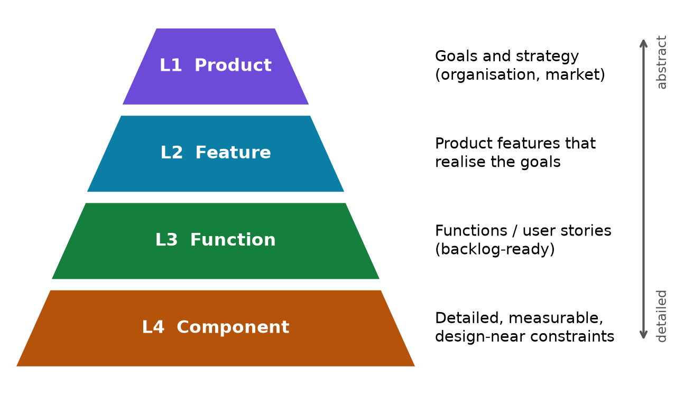
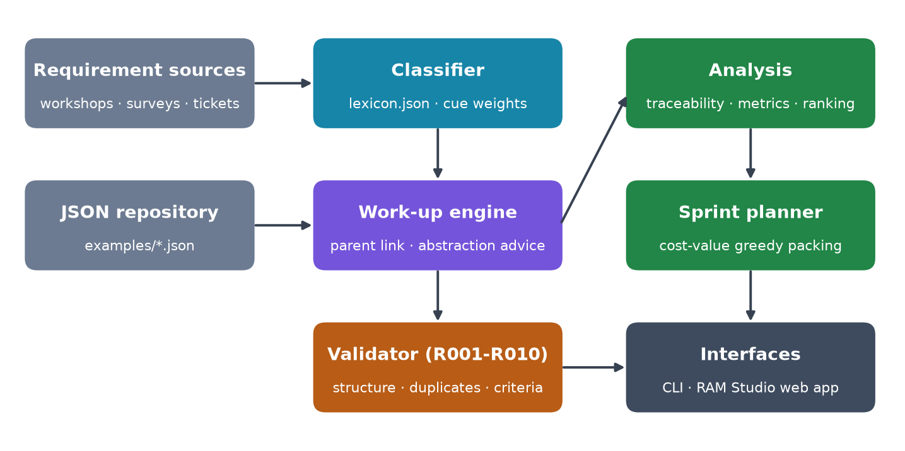
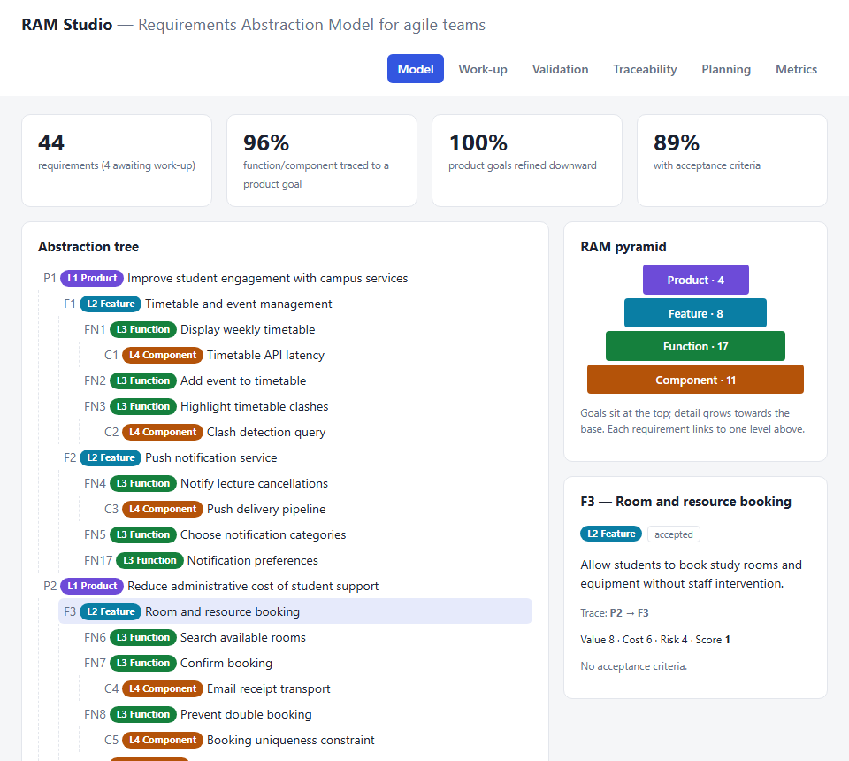
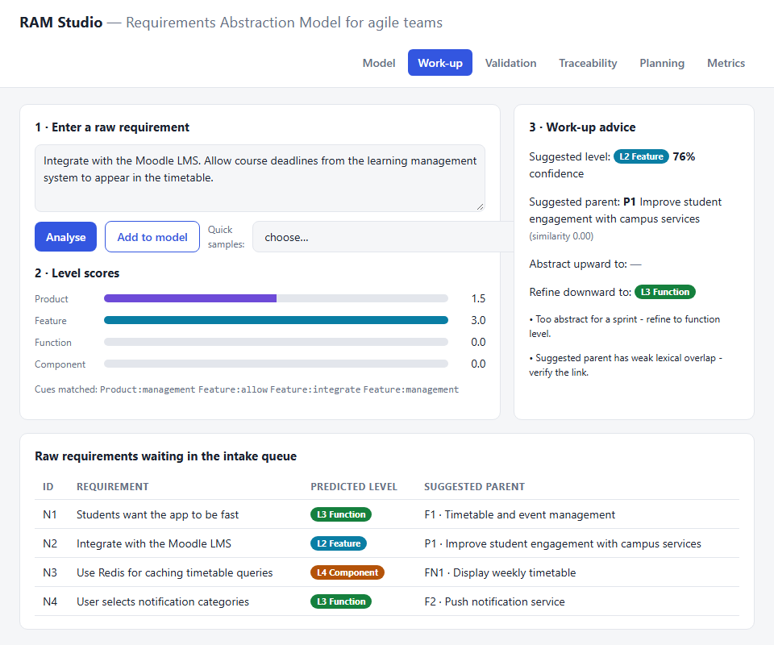
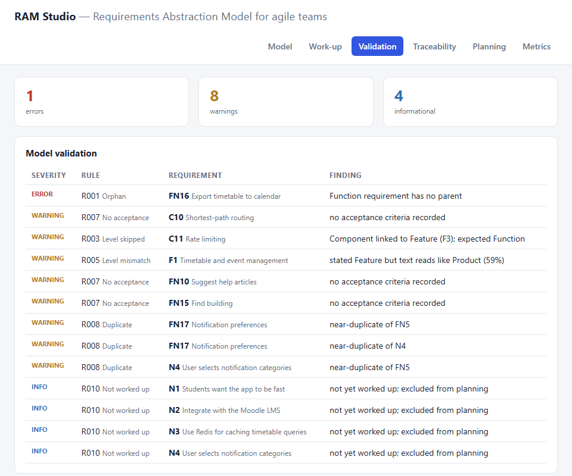
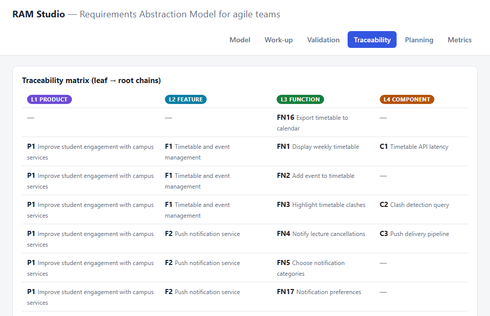
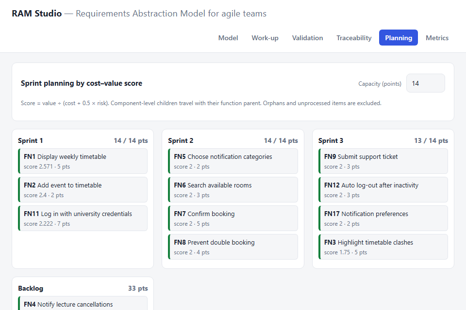
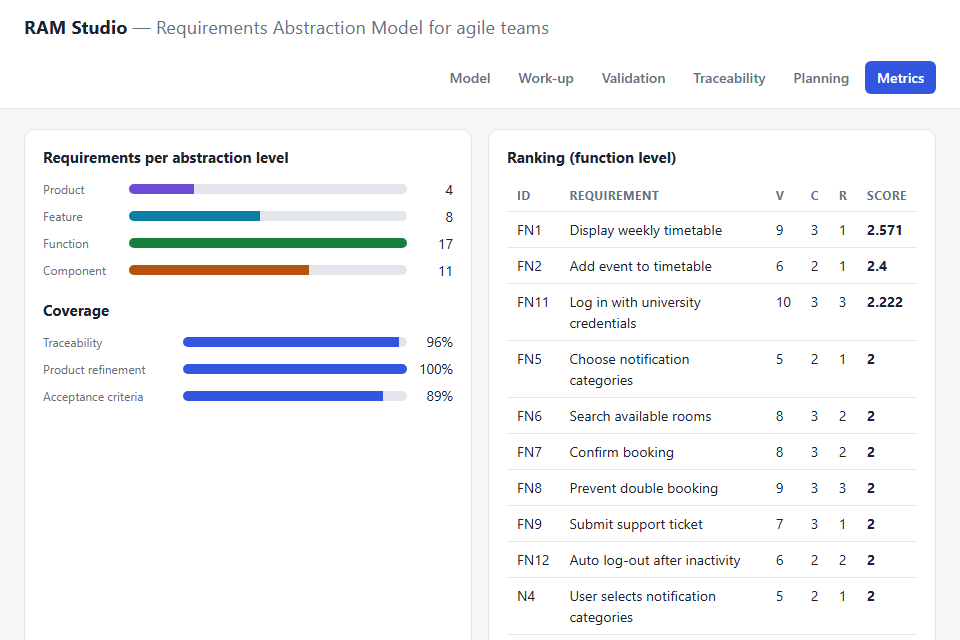
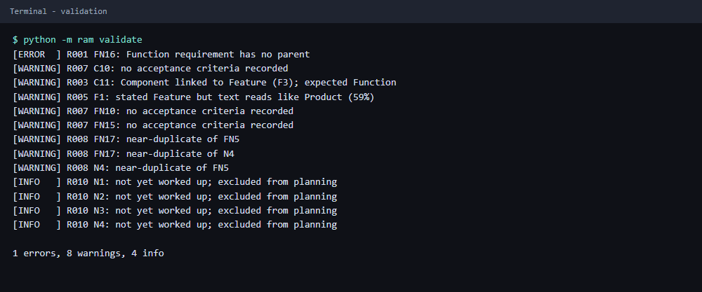
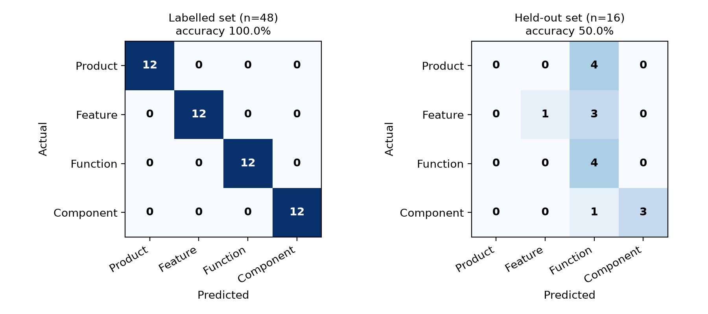

| Author | [Student name] |
| Student ID | [Registration number] |
| Programme | [Degree / programme] |
| Course | Software Engineering / Requirements Engineering |
| Supervisor | [Supervisor name] |
| Institution | [University / department] |
| Date | 30 September 2026 |
| Source code | github.com/nakultt/agile-requirements-abstraction-model |
Agile backlogs routinely mix requirements of very different granularity: strategic goals sit beside screen-level behaviour and low-level performance constraints. This heterogeneity makes backlogs hard to prioritise, weakens traceability from code to business purpose and lets duplicates and orphaned items slip into sprints. The Requirements Abstraction Model (RAM) of Gorschek and Wohlin (2006) addresses this by organising requirements into four abstraction levels (Product, Feature, Function and Component) and prescribing a work-up process that abstracts every requirement upwards to a product goal and refines it downwards to implementable detail. RAM was proposed for market-driven product development, however, and offers no tooling that fits an agile team's sprint cadence.
This report presents RAM Studio, a dependency-free toolkit that operationalises RAM for agile teams. It comprises a Python library and command-line interface, a single-page web application, and a synthetic case study (CampusConnect, 44 requirements). The toolkit provides a transparent lexicon-based abstraction-level classifier, a work-up engine that advises on parent placement and on missing abstraction or refinement levels, ten structural validation rules, a traceability matrix, coverage metrics and a cost–value sprint planner. The implementation is verified by 22 automated tests. On the case study, the validator detected all three seeded defects (an orphan, a skipped level and a duplicate), 96% of implementable requirements traced to a product goal, and the planner distributed 40 accepted requirements over three 14-point sprints. The classifier reached 100% accuracy on a 48-statement labelled set written alongside its lexicon but only 50% on a 16-statement held-out set, an honest indication that lexical cues alone do not generalise to abstractly phrased goals and features. We discuss this result, the threats to validity, and directions for extending the approach.
Keywords: requirements engineering; requirements abstraction model; agile; product backlog; traceability; requirements classification; sprint planning.
Agile methods reduced the ceremony of requirements documentation, but they did not remove the underlying difficulty of deciding what to build and why. Empirical studies of agile requirements practice report that teams replace heavyweight specifications with lightweight artefacts such as user stories, face-to-face communication and a continuously re-prioritised backlog, and they discuss the difficulties this brings, among them limited documentation (Cao & Ramesh, 2008). A recurring symptom is a backlog that is flat: one list in which improve student retention
and expire session tokens after 20 minutes
compete for the same attention even though they differ by several orders of magnitude in abstraction.
A flat backlog has practical consequences. Product owners cannot tell whether a set of stories actually realises a goal; developers receive stories whose rationale is invisible; estimation is distorted because items of different granularity are compared as if they were commensurable; and quality requirements are either forgotten or buried in prose. Requirements engineering research calls the underlying phenomenon the requirements gap: stakeholders state needs at varying levels of abstraction, and unless these are explicitly related, the organisation cannot reason about coverage, cost or value (Regnell & Brinkkemper, 2005; Gorschek & Wohlin, 2006).
The Requirements Abstraction Model (RAM) was designed precisely to close this gap, but it was published as a process model supported by document templates. Agile teams need something lighter and executable: a model they can keep in version control, validate on every change, query for traceability and feed into sprint planning. To our knowledge there is no freely available, dependency-free tool that encodes RAM's four levels and its work-up rules in a form that can be checked automatically. This project closes that gap at the scale of a small team or a teaching environment.
The objective is to design, implement and evaluate a toolkit that makes RAM usable in an agile workflow. The contributions are:
Section 2 reviews related work and Section 3 states the research questions and method. Sections 4 and 5 present the agile adaptation of RAM and its implementation; Section 6 describes the case study; Section 7 shows the toolkit in use; Section 8 reports the evaluation. Section 9 discusses findings and threats to validity and Section 10 concludes.
The Agile Manifesto (Beck et al., 2001) values working software and responding to change over comprehensive documentation. In practice, requirements are captured as user stories (Cohn, 2004), short statements of the form as a <role> I want <capability> so that <benefit>
, collected in a Product Backlog that the Product Owner orders and the team refines (Schwaber & Sutherland, 2020). Good stories are expected to be independent, negotiable, valuable, estimable, small and testable (Wake, 2003). Scaled agile frameworks add a hierarchy of themes, epics, features and stories (Leffingwell, 2011), but the levels are conventions rather than checked structure.
Empirical work shows both the benefits and the risks. Cao and Ramesh (2008) studied requirements practice in agile organisations and describe practices such as face-to-face communication, iterative requirements and prototyping, together with the challenges of working without heavyweight documentation. Such challenges are closely related to the loss of abstraction structure: when goals, features and constraints are not explicitly related, reasoning about them is left to tacit knowledge.
In market-driven development, requirements arrive continuously from many sources (customers, marketing, support, developers, competitors) and are not bound to a single customer contract (Regnell & Brinkkemper, 2005). They are stated at very different levels of abstraction and with very different detail. Sommerville (2016) and Wiegers and Beatty (2013) distinguish business, user and system requirements, but these describe document types rather than a working backlog structure; ISO/IEC/IEEE 29148 (IEEE, 2018) defines attributes of well-formed requirements yet assumes a consistent level of abstraction within a set.
Gorschek and Wohlin (2006) proposed RAM as a response to requirements that arrive in very different shapes and at very different levels of detail. RAM has two main elements. First, four abstraction levels: Product (goals and strategy of the product and organisation), Feature (the features the product offers), Function (what a user can do or the system does, an actionable statement of need) and Component (detailed, design-near, often measurable statements). Second, a work-up process in which each incoming requirement is (1) placed at an abstraction level, (2) abstracted upwards until it is connected to a product-level statement (or rejected as out of scope), and (3) broken down until at least one level of implementable detail exists. The model was evaluated by its authors in industrial pilots and is widely cited in the requirements-engineering literature as an answer to the abstraction problem in product development.
Two properties of RAM make it attractive for agile teams. The upward step provides a why for every item and gives a principled way to reject work that supports no goal. The downward step provides a how and ensures that only sufficiently refined items reach a sprint. Both steps are compatible with backlog refinement as described in the Scrum Guide. What RAM does not provide is tool support designed for continuous, repository-based work.
Prioritisation in the toolkit follows the cost–value approach of Karlsson and Ryan (1997): requirements are ranked by the ratio of their value to their cost. We extend the denominator with a half-weighted risk term, a pragmatic choice that penalises risky items without letting risk dominate. Traceability, the ability to follow a requirement both forwards to its realisation and backwards to its origin (Gotel & Finkelstein, 1994), is obtained in RAM by construction, because every requirement links to exactly one parent one level above. The toolkit exposes this as a leaf-to-root traceability matrix and as a coverage metric.
Agile practice lacks a checked requirements structure; RAM supplies a structure but not an executable, agile-friendly implementation. This project occupies the intersection: an executable RAM whose rules can be evaluated automatically and whose output feeds sprint planning.
RQ1. Can RAM's four abstraction levels and work-up activities be operationalised as a machine-checkable model that fits an agile backlog?
RQ2. How accurately can a transparent, lexicon-based classifier assign requirement statements to the four RAM levels, and where does it fail?
RQ3. Which structural defects can automated work-up rules detect, and how does the resulting model support sprint planning?
The work follows the design-science paradigm (Hevner, March, Park & Ram, 2004): an artefact is built to address an identified problem and is evaluated for utility. The evaluation has three parts, each mapped to a research question. Construction (RQ1) is demonstrated by the implemented data model and rules together with an automated test suite. Classifier evaluation (RQ2) uses two hand-labelled sets of requirement statements. The first (labelled set, 48 statements, 12 per level) was written alongside the lexicon and is therefore optimistic; the second (held-out set, 16 statements, 4 per level) was written afterwards in different wording and was never used for tuning. Accuracy, precision, recall and F1 are reported per level. Case-study analysis (RQ3) applies the validator, metrics and planner to CampusConnect and checks whether seeded defects are found.
Four principles guided the design: transparency (every classifier decision is explained by the cues that fired), portability (plain JSON and the standard library only), a single source of truth (one lexicon file drives both the Python and JavaScript classifiers) and advice rather than automation (the tools suggest but never change the model without a human decision).
Figure 1 shows the four levels as a pyramid: a small number of abstract goals at the top, growing in number and detail towards the base. Table 1 relates each level to familiar agile artefacts. The mapping is an interpretation, not part of the original model: the Product Goal of the Scrum Guide corresponds to RAM's Product level, epics and features to the Feature level, user stories or Product Backlog Items to the Function level, and acceptance criteria, non-functional requirements and technical tasks to the Component level.

| Level | Typical content | Example (CampusConnect) | Agile counterpart |
|---|---|---|---|
| L1 Product | Goals, strategy, business value | Reduce administrative cost of student support | Product Goal |
| L2 Feature | Capabilities that realise goals | Room and resource booking | Epic / feature |
| L3 Function | User-visible behaviour | The system shall validate that a room is not double-booked | User story / PBI |
| L4 Component | Measurable, design-near constraints | Unique constraint on room_id and time_slot | Acceptance criterion / NFR / task |
The toolkit turns the three work-up activities into operations on the model. Placement assigns a level, either by the analyst or as a suggestion from the classifier. Abstraction links the requirement to a parent one level above. The engine proposes the most similar existing parent and lists the levels that would still have to be written to reach a product goal. Refinement reports the levels below the requirement that are needed before it can enter a sprint: anything above the Function level is too abstract to schedule.
Requirements enter the model with status new. A requirement leaves that status only when the analyst accepts its placement; new items are excluded from validation errors, metrics and planning, which reflects RAM's premise that raw requirements should not drive development before work-up. Section 5.4 lists the structural rules that define a well-formed model.
Only Function-level requirements are scheduled, because they are the level at which a team commits to behaviour. Each has a business value v and a risk r (1–10) and an effort estimate c (story-point proxy). The priority score is
score = v / (c + 0.5 · r)
The cost of a Function includes the cost of its Component-level children, since these constraints must be met for the function to be done. The planner fills each sprint greedily in descending score order up to the capacity, skipping items that do not fit. Only requirements whose ancestor chain reaches a Product-level goal are eligible, which operationalises RAM's rule that work unrelated to a goal should not be built.
The system has five layers (Figure 2). Requirement sources feed a JSON repository. The classifier and work-up engine analyse incoming items; the validator checks the model; analysis and the sprint planner derive traceability, metrics and plans. Two interfaces expose the same functions: a command-line interface (python -m ram) and the RAM Studio web application. The implementation is deliberately small (about 540 lines of library code and 313 lines of web application) so that teams can read and adapt it.

A Requirement has an identifier, title, description, level (an integer enumeration 1–4), an optional parent identifier, a status (new, workup, accepted, in_sprint, done, rejected), value, cost and risk estimates, a source, a rationale and a list of acceptance criteria. A RequirementSet stores requirements by identifier and provides the hierarchy operations children, ancestors (robust against cycles and dangling parents) and descendants, plus JSON persistence. Using parent links rather than nested documents lets the same requirement be re-parented and makes defects such as orphans and skipped levels expressible and therefore detectable.
The classifier scores a statement against a weighted lexicon of regular expressions for each level. Product cues include goal
, strategy
, market
, organisation
, retention
and verbs such as increase
and reduce
. Feature cues include feature
, module
, portal
, support
, provide
and allow
. Function cues include shall
, the user can
, interface nouns such as button
and screen
and action verbs such as display
and validate
. Component cues include numbers with units (200 ms
, 50 MB
, 70%
), protocol and technology terms (TLS
, JSON
, Redis
) and design terms (table
, index
, queue
). The level with the highest total weight wins; ties resolve to the more concrete level, and a statement with no cue at all defaults to Function with a very low score. Confidence is the softmax share of the winning level, and all matched cues are returned, which makes each decision auditable. On the case-study texts the classifier processes roughly 8,000 statements per second on a laptop, and the validator runs in about 8 ms for 44 requirements.
Parent suggestion computes the Jaccard similarity (Jaccard, 1912) between the stemmed, stop-word-filtered token sets of the requirement and of every candidate one level above, and proposes the maximum. A weak-overlap note is attached when the similarity is below 0.1, prompting manual verification. The validator implements the ten rules in Table 2. Duplicates are detected by the same similarity measure with a threshold of 0.6 within a level.
| Rule | Severity | Condition |
|---|---|---|
| R001 | Error | Non-product requirement without a parent (orphan) |
| R002 | Error | Parent identifier does not exist |
| R003 | Warning | Parent is not exactly one level above (skipped or inverted level) |
| R004 | Error | Cycle in the parent chain |
| R005 | Warning | Stated level disagrees with a confident classification (≥ 55%) |
| R006 | Info | Product or feature without any refinement below it |
| R007 | Warning | Function or component without acceptance criteria |
| R008 | Warning | Near-duplicate of another requirement at the same level (Jaccard ≥ 0.6) |
| R009 | Warning | Title empty or longer than 90 characters |
| R010 | Info | Requirement still in status new (outside the model) |
The traceability matrix lists one row per leaf, filling each column with the identifier of the ancestor at that level. The metrics module reports the number of active requirements per level, traceability coverage (the proportion of Function and Component requirements with a Product ancestor), product refinement coverage (the proportion of Product goals with descendants) and acceptance coverage. The command-line interface exposes tree, validate, matrix, metrics, rank, plan, workup and classify. The web application (RAM Studio) re-implements the same algorithms in JavaScript on top of the shared lexicon and adds interactive exploration: selecting a requirement shows its trace, the work-up view lets an analyst paste a raw requirement and add it to the model, and the sprint capacity can be changed live. A generator script embeds the lexicon and sample model into data.js, so the web application needs no server.
Twenty-two automated tests (unittest, standard library) cover hierarchy navigation, persistence round-trips, cycle safety, one test per level for the classifier, each validation rule, the seeded defects in the sample model, work-up advice, the priority formula, traceability rows, metrics, planner capacity limits, exclusion of orphans and deterministic tie-breaking. All tests pass. Comparing the two implementations exposed one defect: the Python planner broke score ties by string order (FN12
before FN5
) while the web planner used natural order. Both now use natural ordering, guarded by a regression test.
To exercise the toolkit end to end we constructed CampusConnect, a synthetic requirement set for a university mobile app. It is deliberately realistic in structure but is not drawn from a real project; Section 9 discusses this limitation. The set contains 44 requirements (Table 3): four product goals (student engagement, administrative cost, trusted data handling, a competitive mobile-first platform), eight features, seventeen functions and eleven components, plus four raw requirements with status new that stand for unprocessed intake: a vague remark (students want the app to be fast
), an integration request, a technology decision (use Redis for caching
) and a repeat of an existing function.
| Level | Active | New (raw) | Examples |
|---|---|---|---|
| L1 Product | 4 | 0 | P1 Improve student engagement with campus services |
| L2 Feature | 8 | 0 | F5 Single sign-on and identity management |
| L3 Function | 17 | 4 | FN11 Log in with university credentials |
| L4 Component | 11 | 0 | C6 OAuth 2.0 with PKCE, 15-minute tokens |
| Total | 40 | 4 |
Three defects were seeded to test the validator: FN16 (export timetable to a calendar) has no parent, so it is an orphan; C11 (API rate limiting) is attached directly to the feature Room and resource booking
, skipping the Function level; and FN17 repeats the wording of FN5 (choose notification categories). Each requirement carries value, cost and risk estimates and, where applicable, acceptance criteria; three Function and Component items (FN10, FN15 and C10) intentionally lack criteria. The estimates are illustrative and were assigned by the author, not elicited from stakeholders.
Two further data sets were prepared for the classifier evaluation (Section 8.1): a 48-statement labelled set and a 16-statement held-out set, each balanced across the four levels.
This section shows the toolkit operating on CampusConnect. All screenshots were captured automatically from the running application or real command-line output by scripts in the repository.
Figure 3 shows the model view. The top row reports four headline indicators. The abstraction tree shows every requirement under its parent, colour-coded by level, with status badges for items outside the model; requirements with no parent appear in a separate outside the model
list. The right-hand panel shows the RAM pyramid with live counts and the details of the selected requirement, including its trace to a product goal and its score.

Figure 4 shows work-up advice for the raw requirement Integrate with the Moodle LMS
. The classifier assigns the Feature level with 76% confidence, showing the cue scores that produced the decision. The engine recommends refinement down to the Function level before scheduling and warns that the suggested parent P1 has weak lexical overlap, so the analyst must verify the link. The queue at the bottom lists the four raw requirements with their predicted level and suggested parent.

Figure 5 shows the validation report for CampusConnect: one error, eight warnings and four informational messages. All three seeded defects were found: FN16 (R001 orphan), C11 (R003 skipped level) and FN17 (R008 duplicate of FN5; it is also reported against the raw requirement N4, which repeats the same text). The validator additionally reported three items without acceptance criteria (R007) and, unseeded, a level mismatch for feature F1 (R005): its description (personal timetable management and the discovery of campus events
) reads like a goal to the classifier. This is a legitimate prompt for discussion rather than a false alarm, although it also illustrates the cost of lexical classification.

Figure 6 shows the traceability matrix, one row per leaf-to-root chain. The orphan FN16 is immediately visible as a row whose Product and Feature cells are empty, and C11 appears with an empty Function cell. Figure 7 shows the sprint board for a capacity of 14 points.


Table 4 lists the plan. Sprint 1 contains the three highest-scoring functions (timetable display, add-to-timetable and login) and fills the sprint exactly. Notification of lecture cancellations (FN4) has high value (9) but a cost of 8 points once its delivery-pipeline component is included, so it lands in the backlog; this is a trade-off the ranking makes visible. The orphan FN16 and the four raw items were correctly excluded. One weakness is visible too: the duplicate FN17 was scheduled, because duplicate detection is advisory and does not block planning.
| Sprint | Points | Requirements (in planning order) |
|---|---|---|
| Sprint 1 | 14 / 14 | FN1, FN2, FN11 |
| Sprint 2 | 14 / 14 | FN5, FN6, FN7, FN8 |
| Sprint 3 | 13 / 14 | FN9, FN12, FN17, FN3 |
| Backlog | 33 | FN4, FN13, FN14, FN15, FN10 |
Figure 8 shows the metrics view, with the distribution across levels, three coverage indicators and the ranking of Function-level requirements. Figure 9 shows the same model through the command-line interface, which is suitable for continuous integration: python -m ram validate --strict returns a non-zero exit code when errors are present.


python -m ram validate.Table 5 and Figure 10 summarise classifier performance. On the labelled set the classifier is perfect (48/48). This result is not evidence of generalisation: the lexicon was written by the same author and with knowledge of the kinds of statements in the set. The held-out set was written afterwards, in different wording, and the lexicon was not modified in response to it. Accuracy drops to 50% (8/16).
| Level | Labelled set (n = 48) | Held-out set (n = 16) | ||||
|---|---|---|---|---|---|---|
| P | R | F1 | P | R | F1 | |
| Product | 1.00 | 1.00 | 1.00 | 0.00 | 0.00 | 0.00 |
| Feature | 1.00 | 1.00 | 1.00 | 1.00 | 0.25 | 0.40 |
| Function | 1.00 | 1.00 | 1.00 | 0.33 | 1.00 | 0.50 |
| Component | 1.00 | 1.00 | 1.00 | 1.00 | 0.75 | 0.86 |
| Accuracy | 100.0% | 50.0% | ||||
The errors are systematic, not random. All eight held-out errors were predicted as Function: all four product goals (for example Make our students feel that the university listens to them
), three of four features (A carpooling option for commuters
) and one component (The mobile app targets Android 10 and above
). The cause is structural. Product- and feature-level statements can be phrased without any of the cue words that the lexicon recognises, and when no cue fires the classifier falls back to Function. Component statements are found reliably when they contain units or technology terms, and Function statements are found reliably when they contain interface vocabulary. The asymmetry suggests that concreteness is easy to detect lexically while abstraction is not. On the 40 accepted requirements of the case study the classifier agreed with the stated level in 38 cases (95%); the two disagreements were features F1 and F6, which it read as product-level statements with 59% and 52% confidence.

The validator detected all three seeded defects with no missed detections (3/3) and produced two additional, arguably legitimate findings (R005 on F1 and the N4/FN17 duplicate pair). Because the seeded defects were defined by the author, this is a test of the implementation, not a measurement of how many defects occur in real backlogs. Table 6 shows the headline model metrics.
| Metric | Value | Interpretation |
|---|---|---|
| Active requirements | 40 | 4 raw items excluded |
| Traceability coverage | 96.4% (27/28) | Only FN16 lacks a Product ancestor |
| Product refinement coverage | 100% (4/4) | Each goal has descendants down to Function level |
| Acceptance coverage | 89.3% (25/28) | FN10, FN15, C10 lack criteria |
| Validation findings | 1 / 8 / 4 | Errors / warnings / information |
| Remaining function and component value | 179 | Sum of value scores not yet done |
RQ1. RAM can be operationalised as a checked model. Four levels, parent links, statuses and ten rules suffice to express the work-up activities, and the same definitions drive a command-line tool and a web application. Twenty-two automated tests confirm the behaviour. The operationalisation is an interpretation of RAM for agile teams and has not been validated against the original authors' process or in a live team.
RQ2. A transparent lexicon-based classifier is accurate on concrete statements and poor on abstract ones. It is an acceptable assistant for detecting Components and Functions, but not reliable enough to place goals and features automatically. In the toolkit this is handled by reporting confidence and cues and by making every suggestion advisory.
RQ3. Structural rules detect orphans, skipped levels, duplicates, unrefined goals and missing acceptance criteria; the traceability gate in the planner prevents unanchored work from being scheduled. The planner produces a plausible, explainable plan whose weaknesses (duplicates are planned unless removed, no dependency handling) are visible in the output.
Structure pays off at the boundaries. The most useful outputs were not the headline coverage numbers but the individual findings: the empty cells in the traceability matrix, the warning that a function depends on a goal only through a skipped level, the observation that a high-value function costs eight points once its constraint is counted. These are the conversations RAM is meant to provoke in backlog refinement.
Abstraction is harder to detect than concreteness. The held-out failure pattern is informative. Teams can write component-level statements with measurable units and named technologies, and these are easy to recognise. Goals and features are often phrased as short noun phrases (a carpooling option
), which carry almost no lexical signal. A production-grade classifier would need semantic models, for example sentence embeddings or a fine-tuned language model trained on labelled backlogs. The transparent baseline remains valuable as an explainable comparator and as a fallback that can run offline.
Advisory tooling fits agile values. The toolkit never changes the model on its own and exposes the reasoning behind each suggestion. This respects the agile preference for individuals and interactions over tools, and keeps responsibility for placement with the team.
| Threat | Description | Mitigation |
|---|---|---|
| Construct | Accuracy against author-assigned labels measures agreement with one person's view of the levels. | Labels follow the definitions of Gorschek and Wohlin (2006); ambiguous statements were avoided in the labelled set and deliberately included in the held-out set. |
| Internal | The lexicon and the labelled set were written by the same author, so the 100% result is optimistic. | A separate held-out set was written afterwards and not used for tuning; both results are reported. |
| External | CampusConnect is synthetic and small; estimates are illustrative; the held-out set has only 16 items, so a single item moves accuracy by 6 percentage points. | Stated explicitly; data and code released so others can replicate with real backlogs. |
| Conclusion | No statistical testing or repeated trials; seeded defects are known to the author. | Results are presented descriptively and are claimed to demonstrate feasibility, not effectiveness. |
The classifier is English-only and lexical. Similarity is measured by token overlap, so parent suggestions can be weak when the same idea is phrased differently (for example Students want the app to be fast
was matched to F1 with similarity 0.07). The sprint planner is a greedy heuristic: it ignores dependencies between requirements, team velocity variation and the option of splitting items. The model allows one parent per requirement, and there has been no user study, so claims about usability and team benefit are out of scope.
This project turned the Requirements Abstraction Model into an executable, agile-friendly toolkit. RAM Studio encodes the four abstraction levels and the work-up activities as a checkable data model, advises on placement, validates structure with ten rules, exposes traceability and metrics, and plans sprints from a cost–value ranking restricted to goal-anchored requirements. On the CampusConnect case study it found all seeded defects and produced an explainable plan. An honest held-out evaluation showed that the lexicon-based classifier, while perfect on its development data, reaches only 50% on differently worded statements, because abstract goals and features carry little lexical signal.
Future work follows directly from these findings. (1) Replace or complement the lexicon with a semantic classifier trained on labelled backlogs, keeping the lexicon as an explainable baseline. (2) Evaluate the approach with real teams, measuring refinement effort, defect detection and perceived usefulness. (3) Extend the model with dependencies, multiple parents and split/merge operations, and make the duplicate rule block planning by default. (4) Add integrations that import backlogs from issue trackers and export plans back, and run the validator in continuous integration as a requirements build
. (5) Study how the metrics change over a project's life to detect drift between goals and delivered work.
All results can be regenerated from the repository (own backlogs: python -m ram -f backlog.json validate). The core toolkit needs only Python 3.9 or later; figures and the report additionally use matplotlib and pypdf, and screenshots need Microsoft Edge or Google Chrome.
git clone https://github.com/nakultt/agile-requirements-abstraction-model.git python -m unittest discover -s tests -v # 22 tests python tools/evaluate.py # Table 5, Section 8.1 python -m ram validate | plan | metrics # Section 7.3, Tables 4 and 6 python tools/make_screenshots.py # Figures 3-9 python tools/make_figures.py # Figures 1, 2, 10 python tools/build_report.py # this PDF